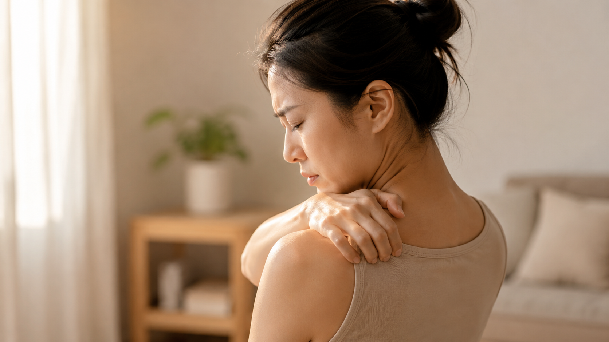
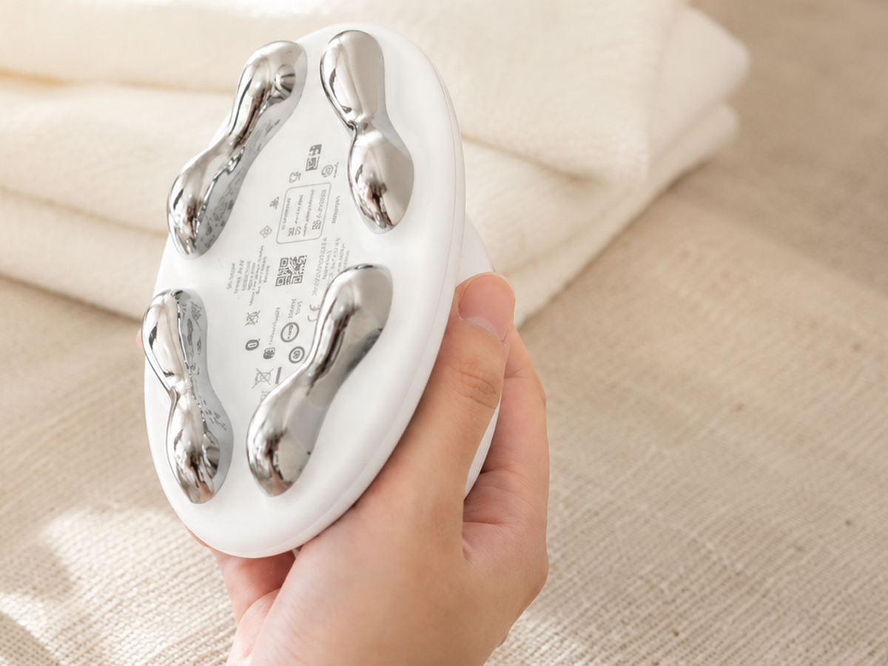

健康知識分享

嗨，大家好～我是日日暖陽的湯湯，你的健康管理 × 體重管理師

你上一次覺得肩膀是鬆的，是什麼時候？
這個問題我問過很多人，多數人會先愣一下，然後說想不起來。
肩頸緊繃是很多人的日常，也是最容易被將就過去的一件事。有拉筋、有按摩過、有貼過痠痛藥布，當下鬆一點，過幾天又回到原樣。
這篇文章想從筋膜的角度，把緊繃這件事說清楚：筋膜到底是什麼、為什麼長時間不動反而會變緊、為什麼拉筋常常不夠，以及放鬆的時候真正該掌握的原則是什麼。
📖 本文目錄
筋膜是包覆並連接全身肌肉、骨骼與器官的結締組織，最大的特徵是它連續成一整張網，而不是一塊一塊分開的。你可以想成一件很貼身的內裡，包著每一條肌肉，也把它們牽在一起。
而肩頸是全身最忙的一段。頭大約 4 到 5 公斤，整天靠這裡撐著；手臂的每一個動作也都從這裡出發；緊張、趕時間的時候，肩膀還會不自覺聳起來。
所以你感覺到的那個「緊」，常常不只是肌肉，還包含包在外面的那層網。這也解釋了兩件很多人有過的經驗：緊起來的時候，你指不出確切是哪一點，只能用手大概比一整片；而按了某個點，當下鬆了，過一陣子又整片緊回來。
因為筋膜需要活動。長時間停在同一個姿勢，它會慢慢變得不好動，摸起來硬硬的、轉頭卡卡的，很多時候就是這樣來的。
這也解釋了一件事：緊繃跟你是坐是站沒有絕對關係，關鍵在於身體整天都在做同一件事。坐辦公室的人肩膀微微聳著、頭往前伸；站櫃檯、顧產線的人重心整天沒換過邊；做體力活的人則是同一個動作重複幾百次，力氣總是從同一邊出去。三種情況看起來差很多，筋膜的處境卻一樣：一直停在同一個模式，沒有機會恢復。
所以你不是突然變緊的。那是一小時一小時累積出來的，只是下班才有空感覺到。
因為「當下鬆開」和「身體真正離開那個模式」，是兩件事。
我們覺得緊的時候，通常會做這幾件事。它們都有各自的用處，只是在做的事情不太一樣：
| 常見的放鬆方式 | 主要在做的事 | 要注意什麼 |
|---|---|---|
| 伸展、拉筋 | 肌肉長度、關節活動度 | 做完會比較鬆，但日常姿勢沒變，過幾天還是會緊回來 |
| 用力按壓、硬推 | 短時間的感受變化 | 力道過強會引發保護性收縮，反而更緊 |
| 熱敷、泡熱水 | 當下的舒適與放鬆感 | 當下很舒服，但姿勢和活動量沒變，一樣留不住 |
你會發現，這幾件事有一個共同點：都是等到很不舒服了才做，而且做完就結束。隔天你還是坐一樣久、站一樣久、搬一樣多，那個模式繼續累積，緊繃當然會回來。
其中最需要提醒的是用力按壓這一項。肩頸緊到受不了的時候，多數人的直覺是用力捏、用力壓，壓到會痛才覺得有壓到。當下確實會鬆一點，但過強的壓力也會讓身體出現保護性的收縮，在感受到威脅時不自覺地繃起來保護自己。這是本能，不是你不夠努力。你越用力對付它，它越覺得有危險。
所以真正少掉的那一塊拼圖，其實就是每天一點點、慢慢來的那種照顧。而那一塊，剛好是最少人做得到的。
放鬆這件事，方向對了比用力更重要。以下三個原則，是我自己在照顧客人和照顧自己時最在意的。
另外，把「換姿勢」放進一天裡，效果常常比下班後的補救更好。坐久了站起來走一下，站久了換腳、走幾步，都是在提醒身體不要一直停在同一個模式。
難就難在這裡：知道要慢、要規律不難，難的是累了一天回到家，還要生出力氣做這件事。
所以日日暖陽推薦工具的標準只有一個：它要讓人在最累的時候也做得下去。我自己用的是一台側面圓圓的儀器，正式名字是 ageLOC MyWave iO，因為長得像一朵雲，我都暱稱叫它雲朵機（也有人叫它海豚機、波波機）。
用法很單純。塗上專用凝膠，讓它貼著肩頸順著方向慢慢滑，四個專利波浪形金屬導頭會貼合身體的曲線，它是智慧變頻偵測，會自己依照刷到的部位調整，我只要負責慢慢刷。
它真正幫到我的是第二點，讓「每天幾分鐘、溫和而規律」這件事做得下去。很多人不是不知道要放鬆，是撐不過那個「今天好累，明天再說」。躺著十分鐘就能完成的事，才有機會變成習慣。

整理一下我自己最有感的幾個地方：
說到底，它做的事情就是把保養帶回生活裡，依照自己的時間安排，而不是等到有空、等到很不舒服了才處理。
它不是拿來取代運動或專業評估的，它的位置就是「日常那一段」。
以下這些狀況不屬於單純的緊繃，建議直接尋求醫師或物理治療師評估，不要自己按壓處理：
日常的保養與專業的醫療評估是兩件事，兩者不衝突，但不能互相取代。
Q1：筋膜和肌肉有什麼不一樣？
肌肉負責收縮產生力量，筋膜是包覆並連接肌肉、骨骼與器官的結締組織，全身連續成一張網。肌肉可以一條一條分開來看，筋膜則是整片連著的，這也是為什麼緊繃的感覺常常不只出現在一個點。
Q2：常聽到的「筋膜沾黏」是正確的說法嗎？
日常說的沾黏，在研究上比較接近「緻密化」，指的是筋膜層之間的基質變得比較黏稠、滑動變差。真正的沾黏通常和手術或外傷後的組織癒合有關，兩者成因不同。理解這個差別的意義在於，一般久坐久站造成的緊繃，不需要用對付疤痕組織的力道去處理。
Q3：多喝水對筋膜有幫助嗎？
水分是筋膜基質的組成之一，維持足夠的水分攝取是基本的健康習慣，但不能期待光靠喝水就解決緊繃。目前的理解是，規律的活動與適當的外在刺激，對筋膜的滑動狀態影響比單純補水更直接。
Q4：放鬆完隔天覺得痠，是正常的嗎？
輕微的痠感在一兩天內慢慢消退，是常見的反應。但如果出現瘀青、痠痛持續超過三天、或是原本沒有的疼痛變明顯，代表當下的力道對你來說太強了，下次要調整。
Q5：日日暖陽的肩頸體驗跟一般按摩不一樣在哪？
方向不同。我們不走大力按壓的路線，第一次會先做肩頸放鬆，走慢一點、溫和一點，重點放在讓身體覺得安全。過程不推銷、不塞產品，體驗完想直接回家也完全可以。
Q6：已經在看醫生或做復健，還可以做日常保養嗎？
要先問過你的醫師或治療師。日常保養和醫療處置的目的不一樣，前者是維持，後者是處理明確的問題，兩者不衝突，但順序與時機要由你的專業人員判斷。如果目前正在治療中，我們不會安排體驗，等你的醫師或治療師說可以了再開始。
緊繃是一天一天累積的，照顧自己也是。
日日暖陽的肩頸放鬆體驗，走的就是這篇說的原則：慢、溫和、讓身體覺得安全。第一次不推銷、不塞產品，時間會依你的狀況安排。加 LINE 可以領新朋友限定的免費體驗券。
＋ 加 LINE 預約體驗 ＊本文為健康知識分享，提供日常保養觀念參考，非醫療診斷或治療建議。如有疼痛、麻木、無力或其他身體不適，仍應尋求醫師等專業醫療人員協助。